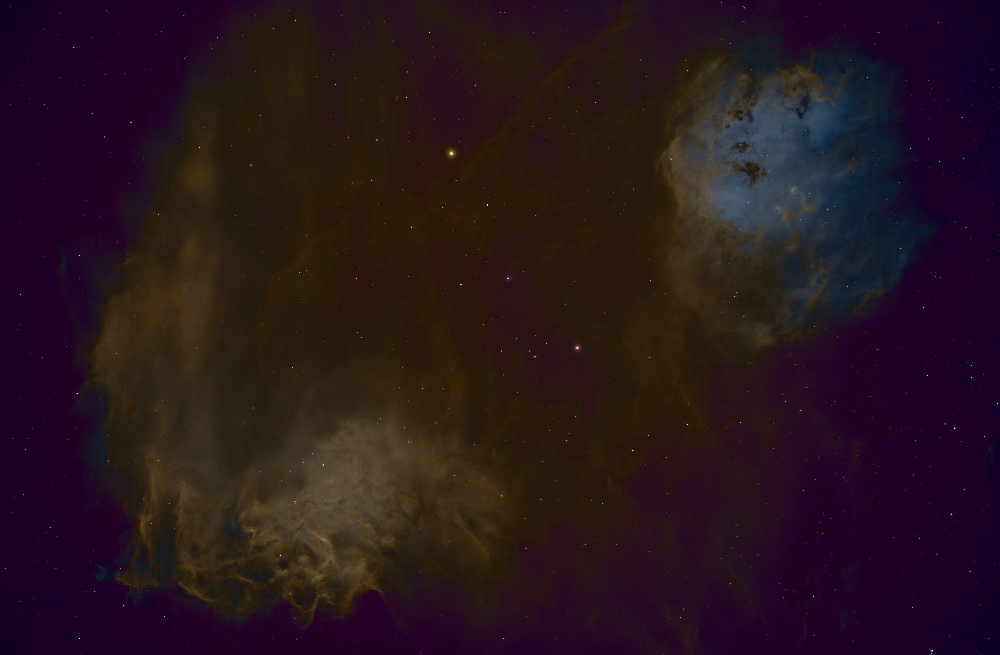
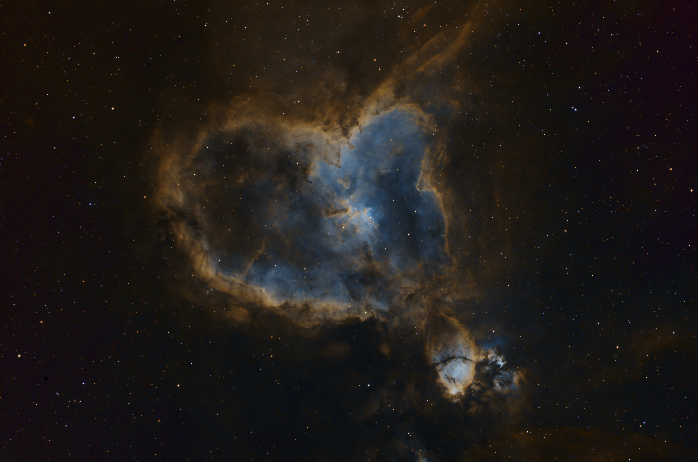

Moon photos
Captured from the garden with a phone and a little patience, these images show the moon as a first step into night-sky photography.
Open moon galleryA growing archive of moon shots, deep-sky study images, and inspiration from the night sky.
Captured from the garden with a phone and a little patience, these images show the moon as a first step into night-sky photography.
Open moon galleryThese images focus on the Hubble-inspired targets that are helping us practice processing and understand deep-sky subjects better.
Open Hubble galleryA selection of nebula and galaxy images from sources such as AstroBackyard, Galactic Hunter, and Cosmic Curiosity.
See project imagesThese examples show what beginners can capture while learning framing, focus, and processing. For equipment context and buying notes, visit our telescope reviews and smart telescope discounts page.
Moon in night sight mode

IC410 Fire and Tadpole nebula

IC1805 Heart Nebula
If you are deciding between upgrading technique or equipment, use these linked pages first. Better planning and processing usually deliver bigger gains than expensive gear at the beginner stage.